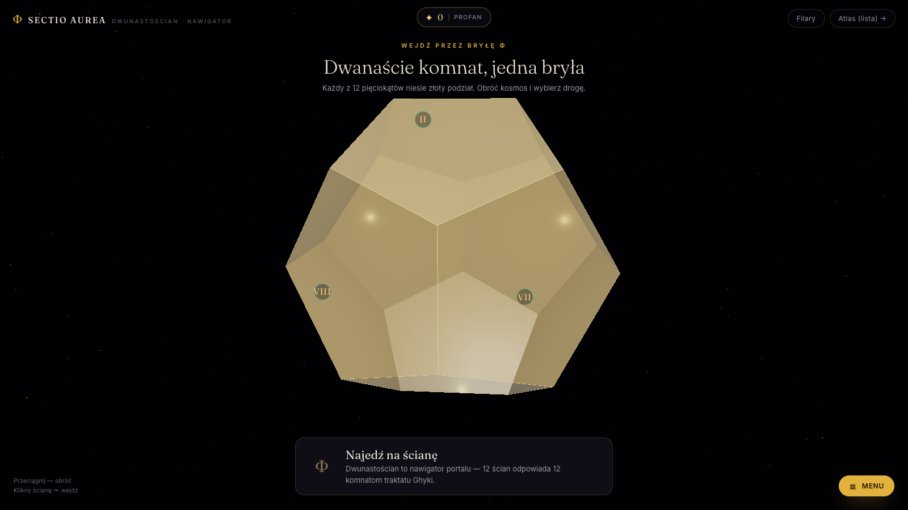

Złota liczba Matili Ghyki (1931) to jeden z wielkich XX-wiecznych traktatów o liczbie, proporcji, pięknie i kosmosie. Wciąga Pitagorasa w sztukę nowoczesną, pięciokąt w dwunastościan, Platona w Cézanne'a. Jest też, praktycznie biorąc, nie do przeczytania liniowo.
Sectio Aurea organizuje Ghykę jako budowlę. Złoty dwunastościan zawieszony na polu gwiazd. Dwanaście pięciokątnych ścian, każda otwiera się na komnatę. Siedem z nich jest w pełni grywalnych. Pięć pozostałych jest cichych — do czytania, do odpoczynku, do zatracenia się w geometrii.
Ghyka jest wspominany w szkołach designu, czasem cytowany w esejach o Le Corbusierze albo Mondrianie, ale prawie nigdy nie czytany od deski do deski. Brief brzmiał: zrobić miejsce, które robi to, o czym mówi książka — proporcję, harmonię, piękno jako coś, przez co się przechodzi i co się czuje — a nie coś, o czym się czyta.
Dwunastościan jest nawigatorem. Dwanaście ścian. Dwanaście komnat. Cała strona to jeden obracający się obiekt — przeciągasz go, krążysz wokół, wybierasz ścianę, wpadasz w komnatę za nią.
Siedem z dwunastu komnat jest grywalnych: Liczba (audio, interwały jako proporcje), Proporcja (przeciągnij, by odkryć Φ), Pentada (żywy shader GLSL pentagramu), Bryły (pięć brył platońskich do manipulacji), Ogród (rośliny napędzane Fibonaccim), Loża (konstelacja rysująca świętą geometrię nad głową), Probierz (mała gra-mit o wyborze złotego cięcia).
Pięć komnat zostaje cichych — mieszczą dłuższe teksty (Φ w naturze, pięć brył regularnych, ciąg Fibonacciego, interwały muzyczne, Modulor Le Corbusiera). Książka pozostaje obecna, ale zostaje w tych pomieszczeniach.
Każda komnata nagradza zaangażowanie złotem (Ghyka pisze bez przerwy o złotych cięciach, złotych prostokątach, złotych proporcjach — zamiana tego na walutę w aplikacji była najnaturalniejszym ruchem w projekcie). Złoto otwiera rangi. Rangi otwierają odznaki. Rangi otwierają siódmą komnatę.
Cała gra jest łagodna. Nic karzącego, nic rywalizacyjnego, żadnej tabeli wyników. Tyle struktury, by dać gościowi powód, by wrócił do komnaty, którą minął przy pierwszej wizycie.
three.js dla centralnego dwunastościanu i komnaty brył platońskich. Własny shader GLSL dla komnaty pentagramu. Web Audio dla komnaty tonów (możesz usłyszeć proporcję 1:Φ w wysokości). Cały postęp utrzymuje się w localStorage — żadnego konta.
Łączna waga: cięższa niż inne flagowce (to scena 3D), ale dalej wydawana jako strona statyczna, bez backendu.
Przeciągnij bryłę, by ją obrócić. Najedź na ścianę, by zobaczyć nazwę komnaty. Klik, by wejść. Najlepiej na desktopie, z włączonym dźwiękiem.
Otwórz Sectio Aurea